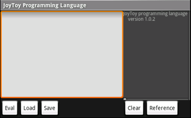

How to use JoyToy
Home

Edit Panel (top-left of the screen)
- write source code in this area.
Console Panel (top-right of the screen)
- result of program displays in this area.(use method 'print')
Buttons (bottom of the screen)
- 'Eval' - run the program in the Edit Panel.
- 'Load' - display files list for load a program file.
- 'Save' - display edit view for save a program.
- 'Clear' - clear Console Panel.
- 'Help' - display this help.